Brunchs
Brunchs
¡Los mejores brunch de todo el Baix Penedès! Gran variedad de ingredientes, sabores y experiencias. Podrás disfrutar de unos brunch dulces, salados o mixtos, buenísimos e ideales para empezar el día
Els millors brunch de tot el Baix Penedès! Gran varietat d'ingredients, gustos i experiències. Podràs gaudir d'uns brunch dolços, salats o un mix, boníssims i ideals per començar el dia
Menú Ver fotos Veure fotos 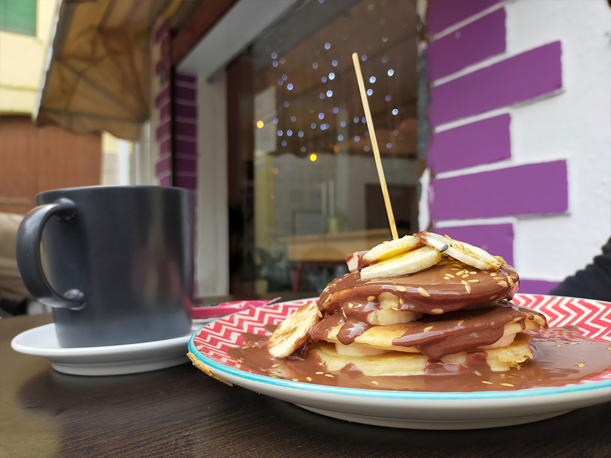
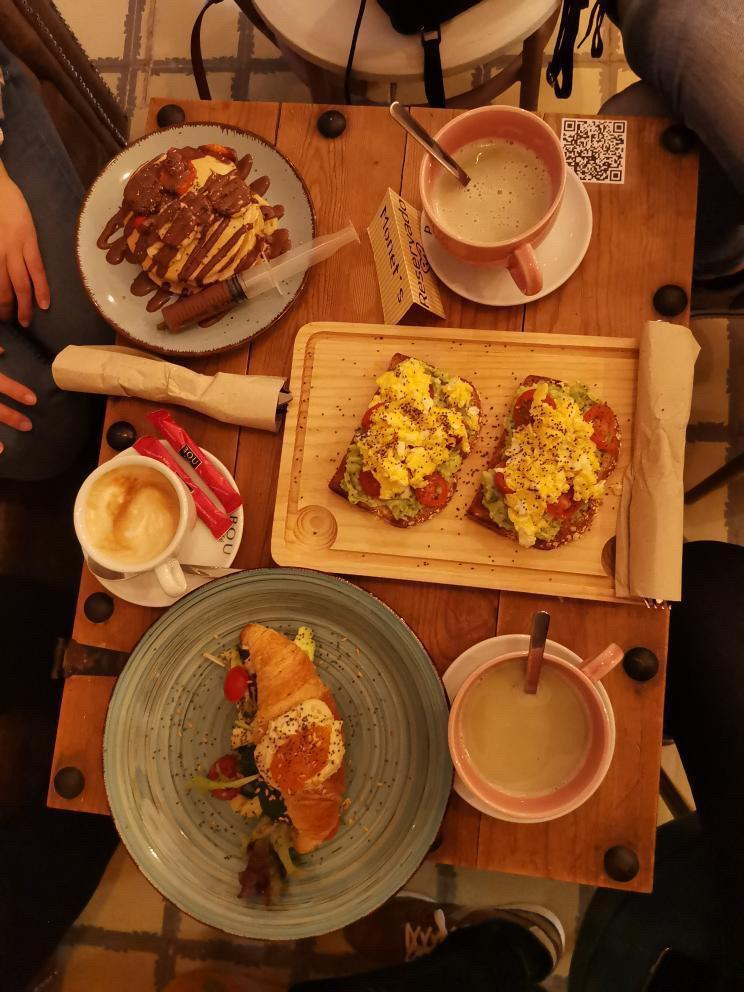
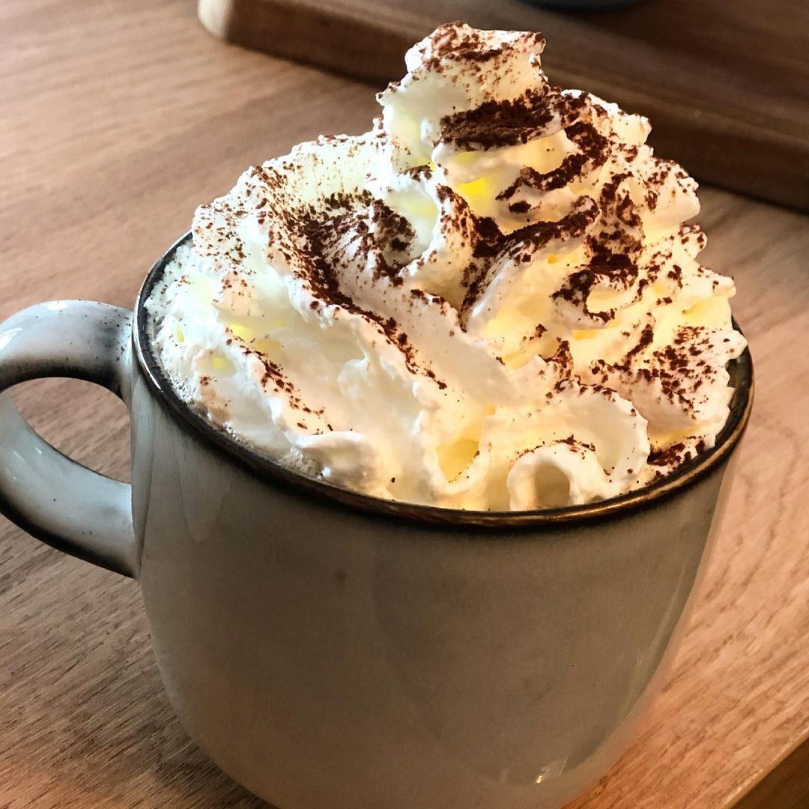
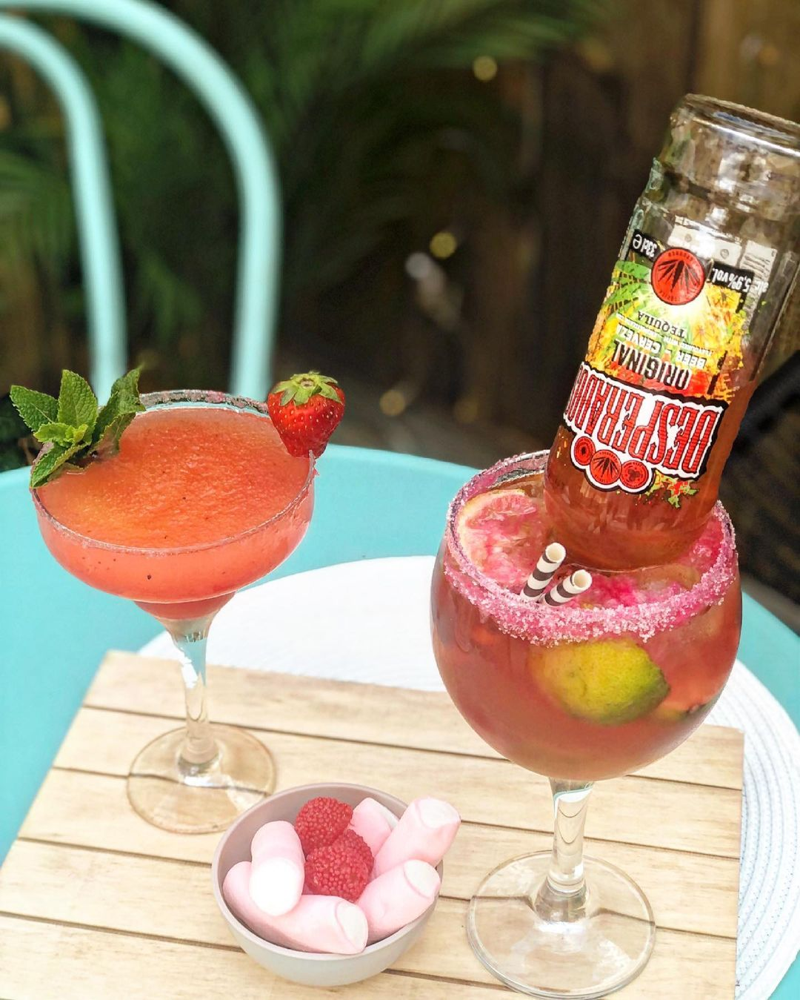
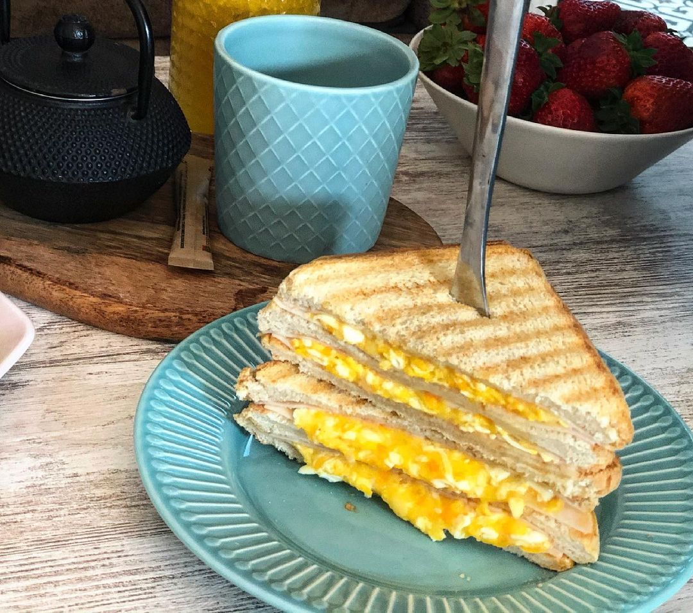
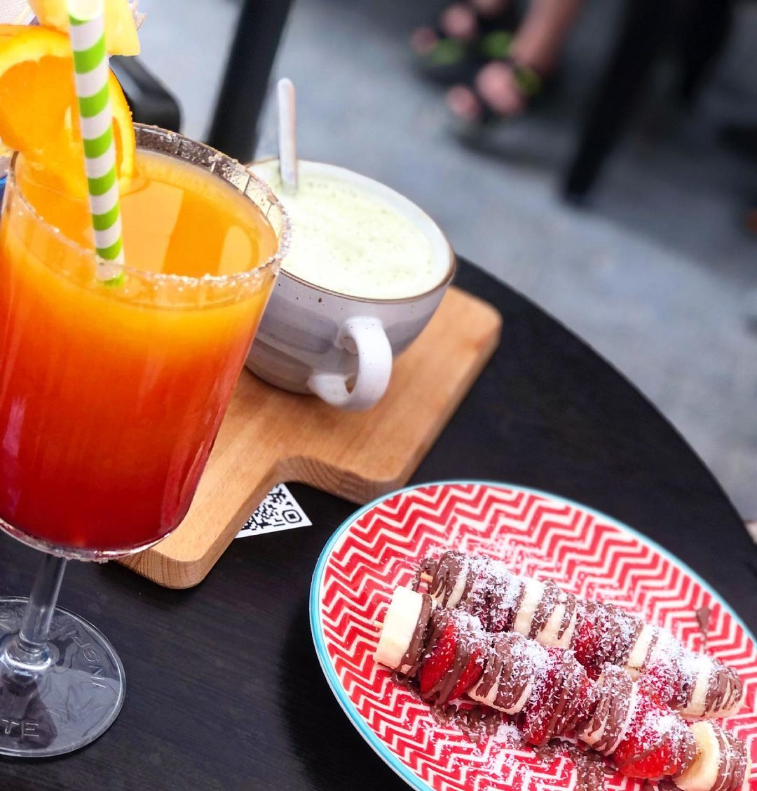
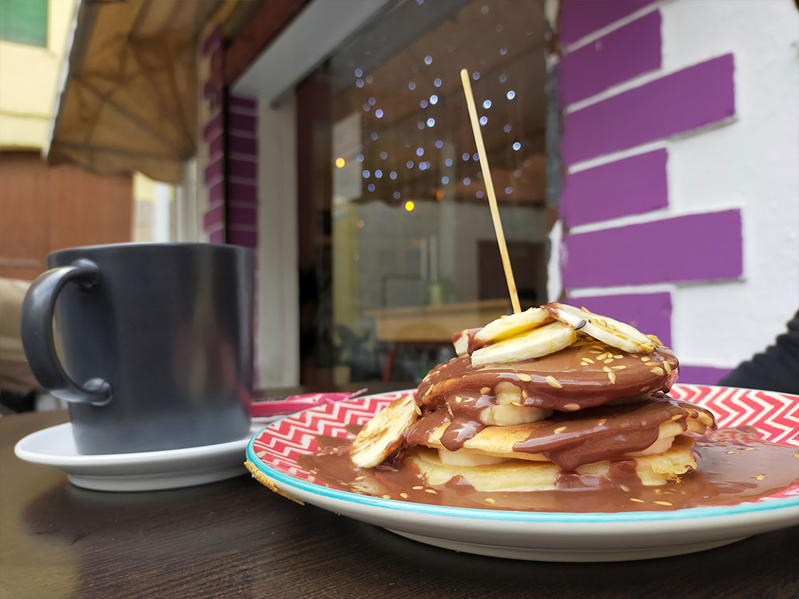
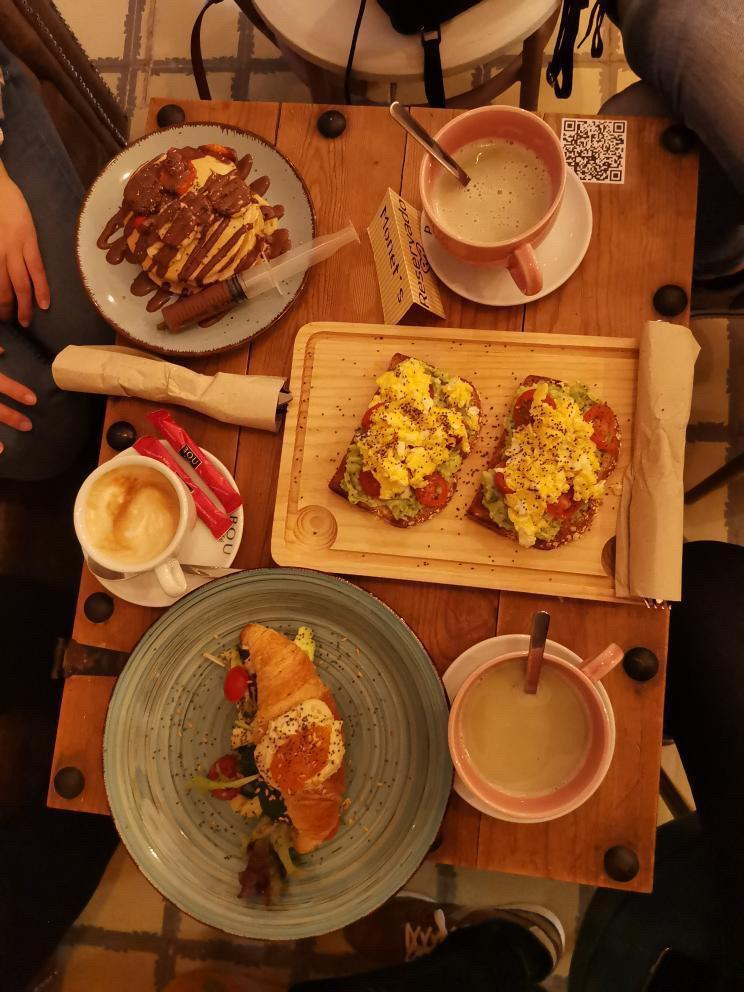
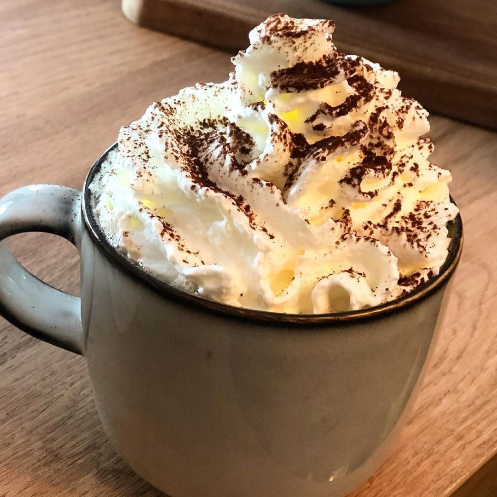
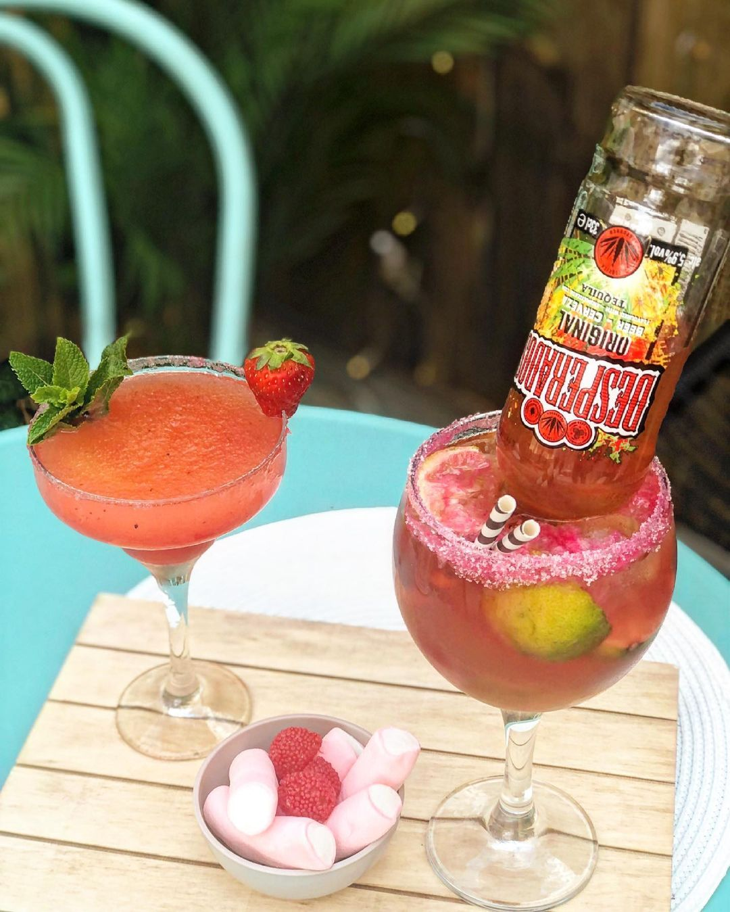
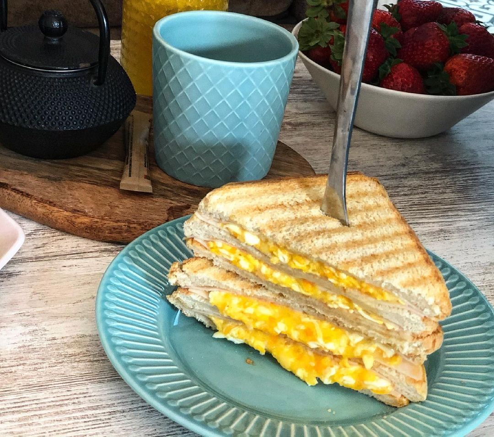
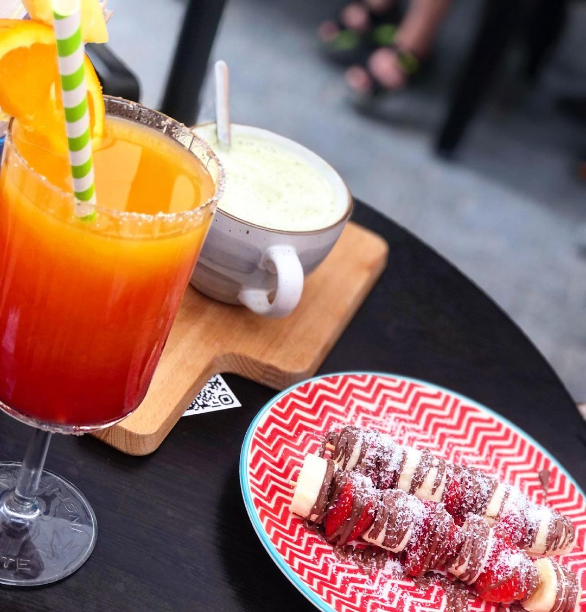